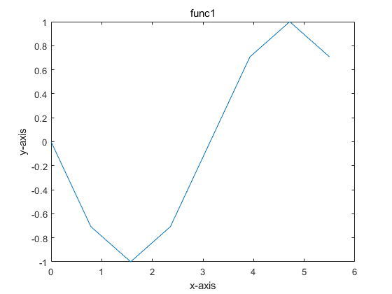
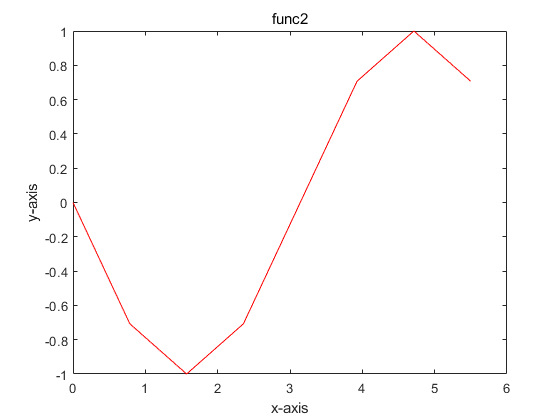
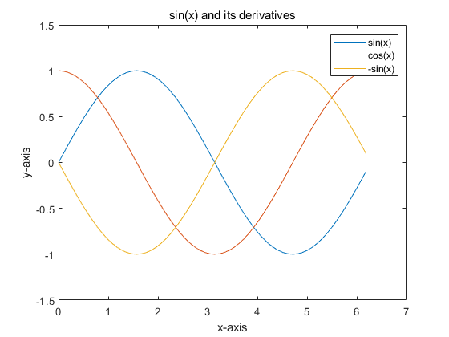

Assignment IV
Contents
Exercise 1 - Discrete Fast Fourier Transform
This section presents the function DFFT, which either determines Fourier transform of a periodic function or determines a function from a corresponding Fourier transform.
In addition, functions derivative and convolute use the function DFFT for calculating a derivative of a function and convolution of two periodic functions, respectively.
format long;
Compares our function DFFT and fft.
% discretizes function sin(x) N = 2^3; L = 2*pi; x = (0:N-1)*(L/N); func = sin(x); % checks whether our function DFFT gives the same result as fft FT1 = DFFT(func)' FT2 = (fft(func)./N)' true = isequal(round(FT1,5),round(FT2,5)) % As you can see below our function DFFT and the built-in function fft give % the same results.
FT1 = 0.000000000000000 + 0.000000000000000i -0.000000000000000 + 0.500000000000000i 0.000000000000000 + 0.000000000000000i 0.000000000000000 + 0.000000000000000i 0.000000000000000 + 0.000000000000000i 0.000000000000000 + 0.000000000000000i 0.000000000000000 - 0.000000000000000i -0.000000000000000 - 0.500000000000000i FT2 = 0.000000000000000 + 0.000000000000000i -0.000000000000000 + 0.500000000000000i 0.000000000000000 + 0.000000000000000i 0.000000000000000 + 0.000000000000000i 0.000000000000000 + 0.000000000000000i 0.000000000000000 - 0.000000000000000i 0.000000000000000 - 0.000000000000000i -0.000000000000000 - 0.500000000000000i true = logical 1
Compares our function DFFT with ifft.
% checks whether our function DFFT gives the same result as ifft func1 = DFFT(FT1,1)' func2 = ifft(FT2.*N) true = isequal(round(func1,5),round(func2,5)) % As you can see below our function DFFT and the built-in function ifft give % the same results.
func1 = 0.000000000000000 + 0.000000000000000i -0.707106781186548 - 0.000000000000000i -1.000000000000000 - 0.000000000000000i -0.707106781186547 - 0.000000000000000i 0.000000000000000 + 0.000000000000000i 0.707106781186548 + 0.000000000000000i 1.000000000000000 + 0.000000000000000i 0.707106781186547 + 0.000000000000000i func2 = 0.000000000000000 -0.707106781186548 -1.000000000000000 -0.707106781186547 0.000000000000000 0.707106781186548 1.000000000000000 0.707106781186547 true = logical 1
Plots func1 and func2 to check whether they are the same function. Uses function real() to neglect minimal imaginary parts arising from floating point errors.
figure; plot(x,real(func1)); title("func1",'FontWeight','Normal'); xlabel('x-axis'); ylabel('y-axis'); figure; plot(x,real(func2),'r'); title("func2",'FontWeight','Normal'); xlabel('x-axis'); ylabel('y-axis'); ylim([-1 1]) % As you can see below, the plots are the same. That also suggests DFFT % works.


Finds the first and the second derivative of a periodic function, say sin(x) again, and plots the original function with its derivatives.
% rediscretizes function sin(x) for a nicer graph N = 2^6; x = (0:N-1)*(L/N); func = sin(x); % computes and plots the derivatives df = real(derivative(func,L)); ddf = real(derivative(df,L)); plot(x,func,x,df,x,ddf); title("sin(x) and its derivatives",'FontWeight','Normal'); xlabel('x-axis'); ylabel('y-axis'); legend('sin(x)','cos(x)','-sin(x)'); % It is clear from the plot that the first and the second derivative were % determined correctly by the function DERIVATIVE.

Finds convolution of two periodic functions, say sin(x) and cos(x)
% discretizes sin(x) and cos(x) N = 2^4; x = (0:N-1)*(L/N); convol1 = convolute(sin(x),cos(x),L)' % Below is a result of this convolution.
convol1 = -0.000000000000001 - 0.000000000000000i 1.202235459768692 - 0.000000000000000i 2.221441469079183 + 0.000000000000000i 2.902453152139430 - 0.000000000000000i 3.141592653589793 - 0.000000000000001i 2.902453152139431 - 0.000000000000001i 2.221441469079183 - 0.000000000000000i 1.202235459768693 - 0.000000000000000i 0.000000000000001 - 0.000000000000000i -1.202235459768692 + 0.000000000000000i -2.221441469079183 + 0.000000000000000i -2.902453152139430 - 0.000000000000000i -3.141592653589793 + 0.000000000000001i -2.902453152139431 + 0.000000000000001i -2.221441469079183 + 0.000000000000000i -1.202235459768693 + 0.000000000000000i
Exercise 2 - Phone Number
This section presents function PhoneNumber that converts signals based on the Dual Tone Multi-Frequency system to numbers.
load('signal.mat'); load('phonenumbers.mat'); Signal = PhoneNumber(signal,8192) Number1 = PhoneNumber(number1,4096) Number2 = PhoneNumber(number2,4096) Number3 = PhoneNumber(number3,4096) Number4 = PhoneNumber(number4,4096) Number5 = PhoneNumber(number5,4096) % All the numbers seem resonable. That suggests the function PhoneNumber % works.
Signal =
1 5 0 8 6 4 7 7 0 0 1
Number1 =
0 2 0 5 2 5 2 6 9 5
Number2 =
8 0 0 8 2 9 1 0 4 0
Number3 =
0 6 2 8 3 0 2 6 1 1
Number4 =
0 0 3 1 7 0 3 4 8 6 4 8 6
Number5 =
0 0 1 2 0 2 4 5 6 1 1 1 1